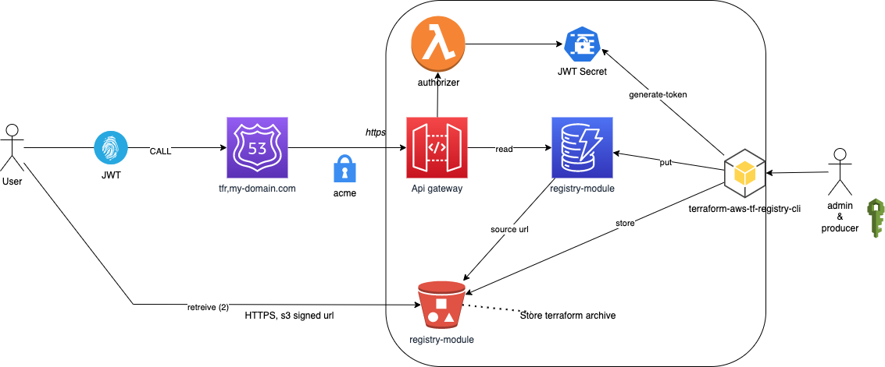

aws-terraform-registry-cli


Versions following Semantic Versioning
Overview
This project create a python client which work with AWS Terraform Private Registry.
Features:
- Show client configuration (for debug purpose)
- Authentication:
- JWT Token generation
- .terraformrc generation to configure Devops workstation
- Terraform module publication from external storage (like a githb module release)
- Terraform module release (more detail on it below) to store every module inside default bucket of the AWS Terraform Private Registry..
See documentation.
The AWS Terraform Private Registry follow this Architectural design:

Installation
Install this library directly into an activated virtual environment:
$ python3 -m pip install terraform-aws-tf-registry
Configuration
We have to provide few informations to this client :
| Name | Description |
|---|---|
| secret_key_name | AWS Secret manager name where JWT Secret is stored |
| repository_url | HTTPS endpoint of the registry |
| dynamodb_table_name | AWS dynamodb table name |
| bucket_name | bucket name |
| default_namespace | default namespace to publish terraform module ("devops" per default) |
All this information can come from several way (choose the rigth for you):
- from a yaml configuration file
- from environment variable
Yaml configuration can be overriden with environment variable.
YAML configuration
The default file name is terraform_registry.yaml, you can override this with TFR_CONFIG_FILE environmentt variable.
To find thie configuratin file, directories will be lookup in this order:
- user home directory
- command line directory
/etc/tfr
Environment variable
| Name | Enviromnent variable name |
|---|---|
| secret_key_name | TFR_SECRET_KEY_NAME |
| repository_url | TFR_REPOSITORY_URL |
| dynamodb_table_name | TFR_DYNAMODB_TABLE_NAME |
| bucket_name | TFR_BUCKET_NAME |
| default_namespace | TFR_DEFAULT_NAMESPACE |
All environment variable can be set with .env file inside your command line directory.
Usage
> tfr
usage: tfr [-h] {config,generate-token,generate-terraformrc,publish,release} ...
Manage terraform registry
positional arguments:
{config,generate-token,generate-terraformrc,publish,release}
commands
config Show configuration parameters
generate-token Generate an access token
generate-terraformrc
Generate terraformrc configuration file
publish Publish a terraform module from custom source.
release Release a terraform module from custom source.
optional arguments:
-h, --help show this help message and exit
```
### Configuration
You can print what the python client use as configuration with the command :
`tfr config`
Example with an empty configuration:
```bash
bucket_name: null
default_namespace: devops
dynamodb_table_name: null
repository_url: null
secret_key_name: null
Authentication
Obtain a JWT token
Command :
usage: tfr generate-token [-h] [-weeks WEEKS]
optional arguments:
-h, --help show this help message and exit
-weeks WEEKS, --weeks WEEKS
#weeks of validity (52 per default)
Configure terraform with your private registry
Users must create .terraformrc file in their $HOME directory, with this content:
credentials "registry.my-domain.com" {
token = "Mytoken"
}
Command :
usage: tfr generate-terraformrc [-h] -output-directory OUTPUT_DIRECTORY [-weeks WEEKS]
optional arguments:
-h, --help show this help message and exit
-output-directory OUTPUT_DIRECTORY, --output-directory OUTPUT_DIRECTORY
output directory
-weeks WEEKS, --weeks WEEKS
#weeks of validity (52 per default)
Terraform & Publication
You have two way to publish a module, using:
publishrelease
What's the difference ?
publish: register the source module as is in the aws private terraform regstry. You could have access issue if this url is not public.
release:
- store the source into the dedicated bucket of aws private terraform regstry. The access is managed within registry.
- archive (targ.gz) if the source is a folder
- download the source if it's an http utl
We use release from our ci/cd pipeline and publish when we have to do something like 'quick and dirty' ... (It never happen, I swear !)
Publish command
usage: tfr publish [-h] [-namespace NAMESPACE] -name NAME -system SYSTEM -version VERSION -source SOURCE
optional arguments:
-h, --help show this help message and exit
-namespace NAMESPACE, --namespace NAMESPACE
module namespace
-name NAME, --name NAME
module name
-system SYSTEM, --system SYSTEM
module system (aws, ...)
-version VERSION, --version VERSION
module version
-source SOURCE, --source SOURCE
module source
Release command
usage: tfr release [-h] [-namespace NAMESPACE] -name NAME -system SYSTEM -version VERSION -source SOURCE
optional arguments:
-h, --help show this help message and exit
-namespace NAMESPACE, --namespace NAMESPACE
module namespace
-name NAME, --name NAME
module name
-system SYSTEM, --system SYSTEM
module system (aws, ...)
-version VERSION, --version VERSION
module version
-source SOURCE, --source SOURCE
module source